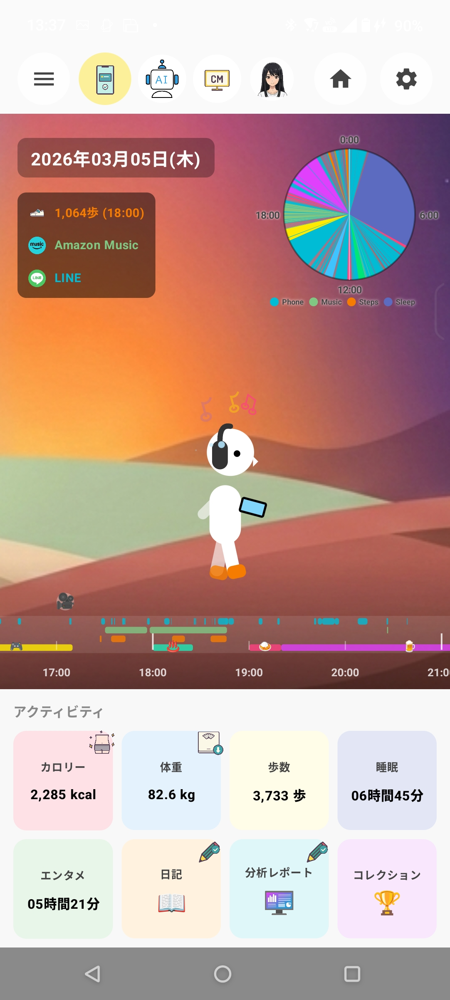
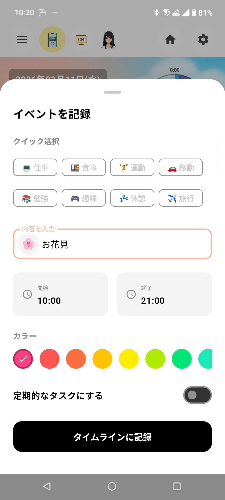

アプリを開くと、あなたの「今日」がリアルタイムに再現されます。

※画面は開発中のものです
あなたが音楽を聴いていればアバターもヘッドホンをつけ、歩いていればアバターも歩き出します。あなたの行動とリンクして表情を変えます。
右上の円グラフは、1日の活動割合（睡眠、音楽、歩行、アプリ使用）を視覚的に表しています。何に時間を使ったか一目でわかります。
中央の帯（タイムライン）を左右にスワイプすると、過去の時刻に戻れます。その時に撮った写真が「吹き出し」として飛び出します。
下のパネルをタップすると、それぞれの詳細データを確認できます。
過去の自分を振り返ることで、
新しい明日がもっと楽しくなる。
LifeMemory
デジタルな記録だけでなく、あなたの「リアルな行動」もタイムラインに残せます。

食事、仕事、運動、旅行など、よくあるイベントはアイコンをタップするだけ。内容には好きな絵文字も使えます。
登録したイベントは、タイムライン上に指定したカラーの帯として表示されます。スワイプして振り返る際、何時まで何をしていたかが直感的にわかります。
「仕事」や「睡眠」など、毎日決まった時間のルーチンは「定期的なタスク」をONにすることで、翌日以降も自動でタイムラインに表示されます。